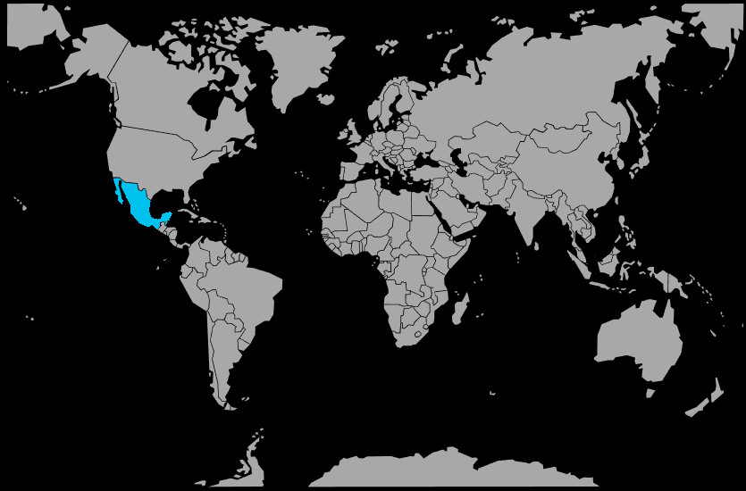

Systématique
- Ordre : Cichliformes
- Famille : Cichlidae
- Genre : Trichromis
- Espèce : Trichromis salvini
Trichromis salvini, anciennement classé parmi les Cichlasoma, est un cichlidé d’Amérique centrale de taille moyenne, apprécié pour sa livrée jaune vif marquée de bandes noires et de taches rouges.
Il atteint en général 15 à 18 cm, avec un corps allongé et comprimé latéralement, et occupe surtout la zone médiane et inférieure de la colonne d’eau.
Trichromis salvini est un cichlidé territorial et assez agressif, surtout en période de reproduction, où il défend vigoureusement une zone de ponte et ses alevins.
La cohabitation se fait de préférence avec des poissons robustes et de taille comparable, dans un bac spacieux avec de nombreuses cachettes, racines et roches pour briser les lignes de vue.
Mode : pondeur sur substrat découvert. Le couple nettoie une pierre plate ou une surface dure, où la femelle dépose les œufs ensuite fécondés par le mâle.
Les parents protègent activement la ponte, ventilent les œufs puis gardent les larves et les jeunes alevins en banc serré, montrant un comportement parental développé et une agressivité accrue envers les autres occupants du bac.
Dimorphisme sexuel : modéré. Les mâles sont généralement plus grands, avec des nageoires plus allongées, et peuvent présenter des couleurs un peu plus intenses; les femelles arborent souvent une tache noire plus marquée sur la dorsale en reproduction.
Espérance de vie : en captivité, le cichlidé de Salvini vit environ 8 à 10 ans dans de bonnes conditions de maintenance.
L’espèce habite des rivières et ruisseaux d’Amérique centrale, avec un courant de faible à modéré, des fonds composés de sable, graviers, roches et racines, et une eau souvent légèrement trouble mais bien oxygénée.
Répartition
Origine naturelle :
- Amérique centrale (Mexique sud‑est, Guatemala, Belize, Honduras).
- Bassins de rivières se jetant dans l’Atlantique ou la mer des Caraïbes.
Trichromis salvini colonise principalement les cours d’eau moyens et inférieurs, les bras morts et les zones calmes avec cachettes abondantes.
Paramètres de maintenance
Température : 24 à 28 °C.
pH : 7,0 à 8,0, de neutre à légèrement alcalin.
GH : 5 à 15 °dGH.
Courant : faible à modéré, avec une filtration performante pour gérer la charge organique d’un cichlidé relativement pollueur.
Volume conseillé : au minimum 250 à 300 L pour un couple, davantage en communautaire avec d’autres cichlidés d’Amérique centrale.
Régime alimentaire
Régime : carnivore opportuniste. Dans la nature, il consomme insectes, petits crustacés, invertébrés et parfois de petits poissons.
En aquarium, il accepte facilement granulés et sticks pour cichlidés carnivores, complétés par des proies congelées ou fraîches (crevettes, moules, vers) distribuées avec modération.
Il est important de varier l’alimentation et d’éviter les excès de nourriture grasse afin de prévenir les problèmes hépatiques et la pollution excessive du bac.